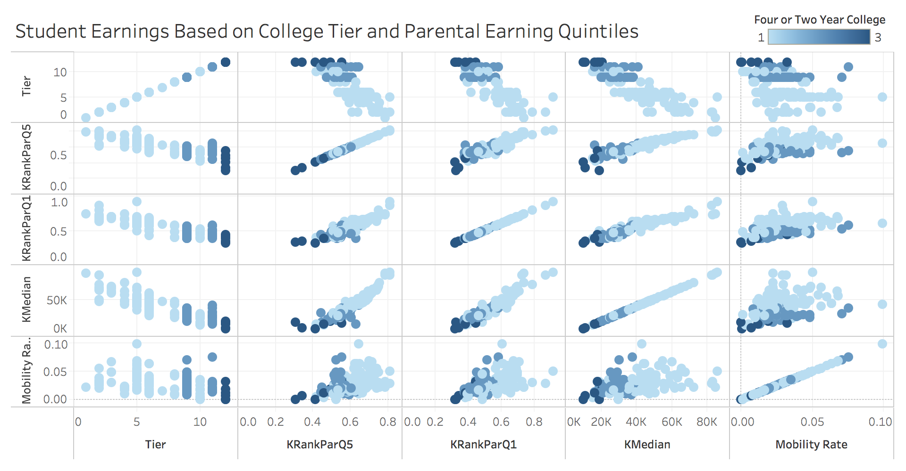

Scatter Plot Matrix
Student Earnings Based on College Tier and Parental Earning Quintiles
Scatter Plot Matrix comparing:
- Tier
- KRankParQ5 - Mean Kid Earnings Rank Conditional on Parents in Quintile 5
- KRankParQ1 - Mean Kid Earnings Rank Conditional on Parents in Quintile 1
- KMedian - Median Child Individual Earnings in 2014
- Mobility Rate
Color encoding shows whether it is a four-year, two-year, or less than two-year school
The data is filtered on State, only looking at colleges in CA
This visualization seeks to support one of the main results documented by the original study:
Children from low- and high-income families have similar earnings outcomes conditional on the college they attend, indicating that low-income students are not mismatched at selective colleges.
This visualization allows us to see that the mobility rate is fairly similar amongst children with parents in both the lowest and highest quintile, as is the median earnings. A high mobiity rate is also seemingly not tied to only high tier colleges, but higher tier colleges do correspond to higher median earnings.
Prototype

Chaitrika Budamagunta
Dataset: “Baseline Cross-Sectional Estimates of Child and Parent Income Distributions by College”
from the Mobility Report Cards: The Role of Colleges in Intergenerational Mobility project
from Opportunity Insights.